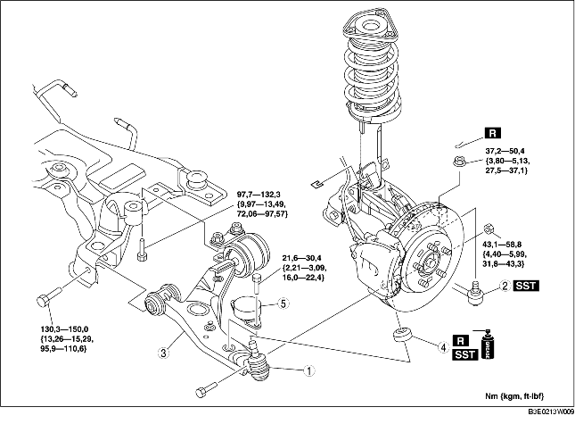

1. Verwijder de onderdelen in de aangegeven volgorde, zie de tabel.
2. Plaats de onderdelen in omgekeerde volgorde.
3. Controleer de wieluitlijning en corrigeer deze indien nodig. (Zie VOORWIELUITLIJNING.)

.
1. Verwijder de middelste bout van motorsteun nr. 1 (Uitvoeringen met LF-motor)
2. Verplaats de motor met de transmissie iets naar voren. (Uitvoeringen met LF-motor)
3. Verwijder de achterste bout van de draagarm.
4. Verwijder de voorste draagarm.
1. Verwijder het vet van de kogel.
2. Vul de nieuwe hoes met vet.
3. Pers de hoes met SST op de fuseekogel.
4. Veeg het overtollige vet weg.
1. Breng de draagarm in positie.
2. Plaats motorsteun nr. 1. (Uitvoeringen met LF-motor)
3. Draai de achterste bout van de draagarm vast.
4. Draai de voorste bout van de draagarm vast.
5. Draai de moer van de onderste fuseekogel vast.